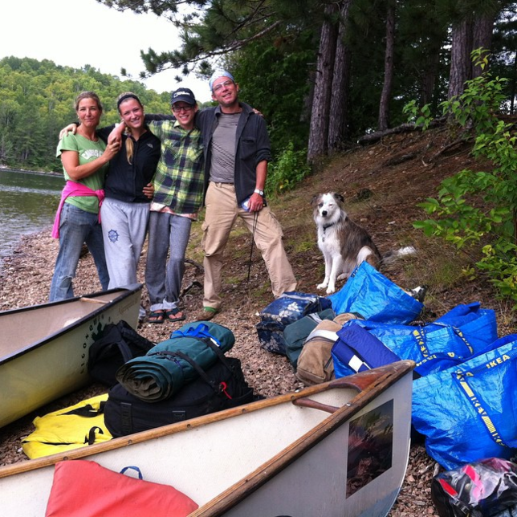
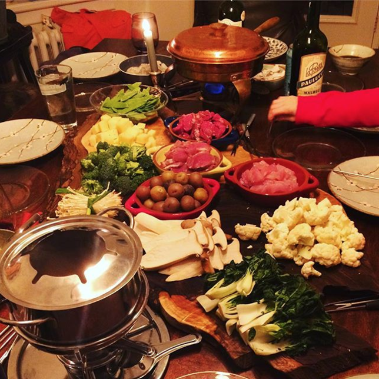
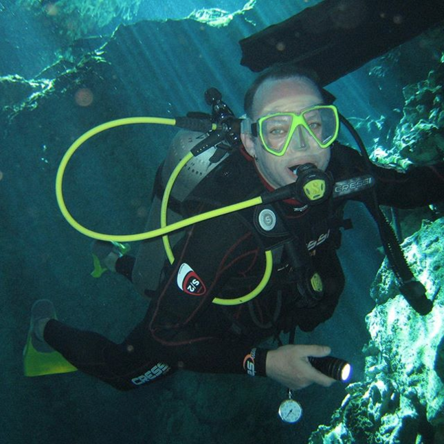
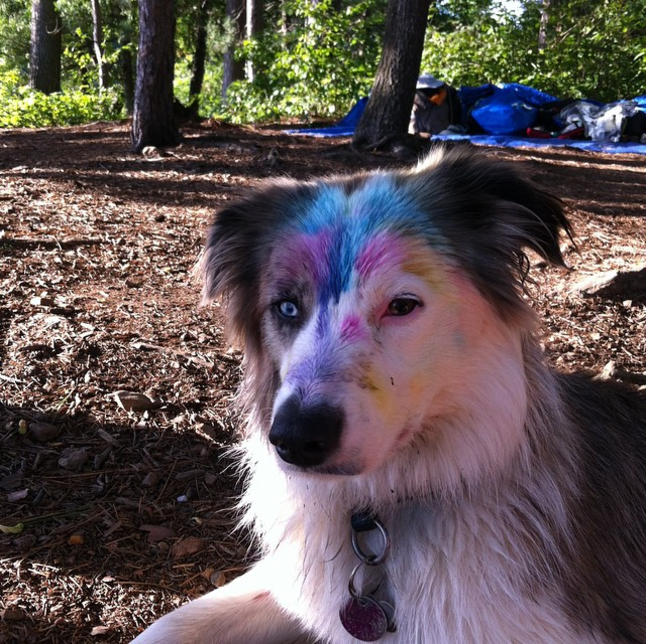
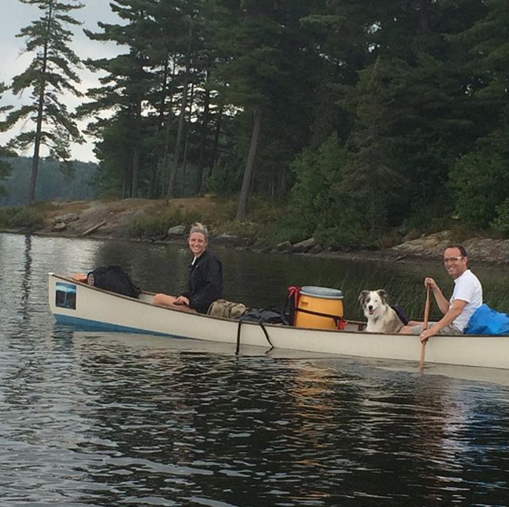
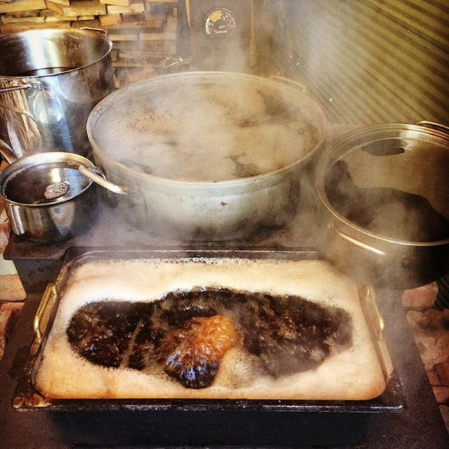

Hello There
Welcome to the Muskoka Naturopathic Family Practice.
I’m Howard Owens, a licensed Naturopathic Doctor. A proud graduate of the Canadian College of Naturopathic Medicine. And I’ve practiced in downtown Bracebridge, Ontario - right in the heart of Muskoka - since 2002.
before you go any further
here's what I believe
- Do no harm.
- Boost the body's ability to heal itself.
- Treat the cause, not the symptoms.
- Treat the whole person, not their separate parts.
- The Doctor is a teacher.
- Prevention is the best technique.
These are the central tenets of naturopath - and I've adhered to them ever since I put my passion into practice, over 15 years ago.
My Practice
I focus on prevention, working with nature and the body’s ability to heal itself.
I look to the most successful natural treatments and techniques from around the world, specifically Asian and European systems, whose healthcare solutions have been delivering proven results for hundreds of years.
As an ND, I am trained in the safe and effective use of treatments combining herbal medicine, clinical nutrition, lifestyle counselling, orthomolecular medicine, physical therapies and acupuncture.
With training in western diagnosis and research, I can speak the same language as your MD. I appreciate and utilize the strengths of modern science throughout my work.
I work with the government, research and medical communities to be at the forefront of understanding, predicting, and reporting on herb-drug-vitamin interactions.
see the complete list of what I treat
Here
about NDs
Naturopathic Doctors, or NDs, employ a unique and comprehensive approach to improving health and treating illness.
The primary goal of treatment is to address the cause of the problem. That means seeing the patient as a whole person, and considering the following factors when diagnosing and developing treatment:
 The Physical
The PhysicalThe Mental
The Emotional
The Spiritual
The Harrington Method
My work as an ND has led me to co-create a line of natural health products, called Harrington’s. Each formula is scientifically enhanced and comes in uniquely powerful doses that act fast and get real results.
You can check it out at:
TheHarringtonMethod.com
Life Itself
When I’m not hard at work healing, I volunteer for the Town of Bracebridge Parks and Trails and Recreation Committee, as well as the Muskoka Trail Council. We work with local politicians and health officials on issues surrounding active transportation, eliminating pesticide / herbicide use, trail upkeep, and other initiatives geared towards helping Muskoka and its people.
I regularly hold seminars for indigenous people in Rama, helping them improve their health and diets. I also travel frequently to men’s prisons, teaching inmates about the positive effects of nutrition and naturopathy. And finally, I can be found at home with my wife Allyson, and my two wonderful kids Seamus and Bronwyn – all of whom can be found on my Instagram account. Speaking of which…





